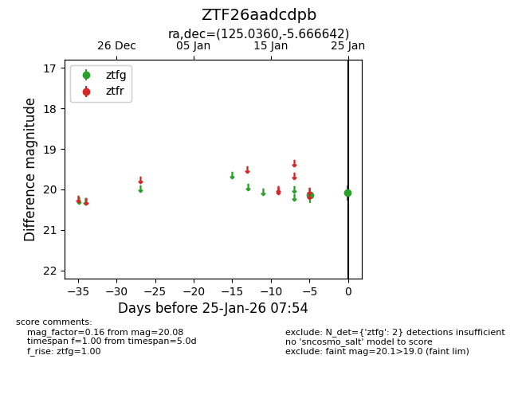
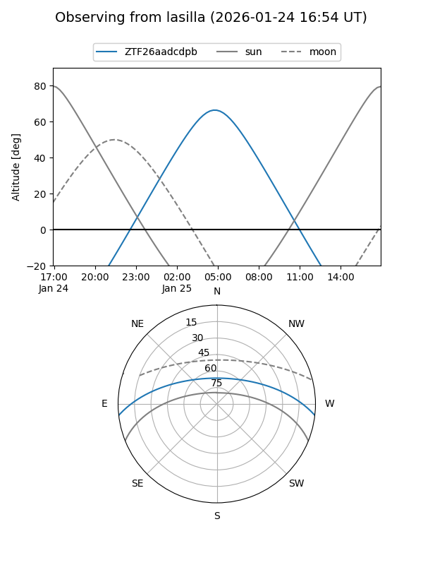
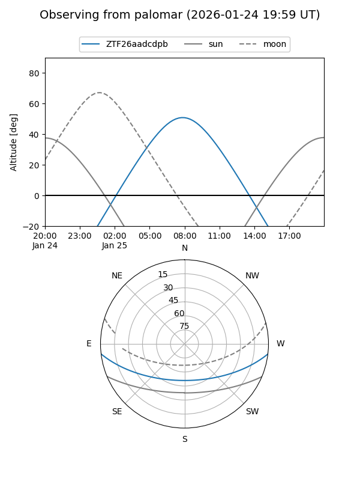

ZTF26aadcdpb
Target ZTF26aadcdpb at 2026-01-25 07:56
Aliases and brokers:
FINK: link
Lasair: link
ALeRCE: link
alt names
ZTF26aadcdpb (ztf,fink_ztf)
Coordinates:
equatorial (ra, dec) = 125.0360,-5.66664
equatorial (HMS+DMS) = 08:20:08.64,-05:39:59.91
galactic (l, b) = (228.6395,+16.81427)
Flags:
Photometry:
last ztfg=20.08
2 ztfg detections
Lightcurve

Visibility


Additional plots